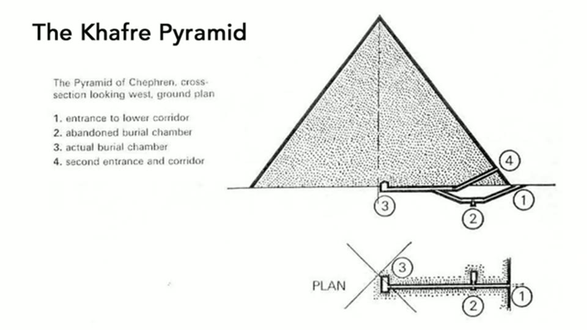

Curious Being
Great Pyramid: Not a Power Plant — The Truth Is More Surprising
Tina · 18 min · watch on YouTube · summarised 2026-08-23
Christopher Dunn proposed in 1994 that the Great Pyramid's interior chambers and passageways worked as a power plant, and others have since compared it to Nikola Tesla's Wardenclyffe tower, generating and transmitting electricity through underground aquifers 00:24–01:01. She sets out to test whether that holds.
The argument that does the most work
Before any of the physics, a structural objection 01:09–03:36.
Almost all study of pyramid function is study of one pyramid. Khafre, standing right beside it, gets almost none. And Khafre — like the other big pyramids at Dahshur and Saqqara — is almost entirely solid. It has no chamber inside its built mass at all; its passages and chambers are cut into the bedrock underneath.


The objection that disposes of a whole family of theories at once: the pyramids other than Khufu's have no interior at all.
So her question: if the Great Pyramid was a power plant, what were the others? Not a second power plant beside the first. Not transmitters either, she argues — Khafre is too close for that to make sense, and the pyramids at Dahshur and Saqqara are clustered too. If a civilisation could build all of these, and if one transmitter was somehow not enough, why solve the problem by building more of the same enormously expensive thing rather than a better one?
The point underneath it: the Great Pyramid is an outlier, and an explanation that only fits the outlier is not an explanation of pyramids.
The chemistry objection
She takes the specific mechanism from an article by Jonathon Perrin on Ancient Origins 03:42–05:43. Dunn's account, as she summarises it: the Queen's Chamber shafts held hydrated zinc chloride and dilute hydrochloric acid to generate hydrogen, filling the Grand Gallery and King's Chamber; atmospheric microwave energy entered by the north shaft, was amplified by the hydrogen, and left by the south shaft as a focused microwave beam to power machines.
Perrin's objections, which she endorses:
- The chambers cannot hold water. The interiors are not waterproof. She anticipates the reply that waterproofing eroded away, and answers that this is the interior of the Great Pyramid, sheltered from the elements — human wear might explain damage low down, but not in the upper parts of the chambers. That, in Perrin's words, rules out the power plant theory "and any other that requires liquid to be stored there".
- The acid would eat the building. Perrin, a geologist: a dilute hydrochloric acid solution in any of the shafts would quickly dissolve the surrounding limestone.
The Tesla comparison, point by point
The claimed similarities 06:03–06:52: both primarily non-metallic; both on porous limestone riddled with saltwater aquifers; both with tunnels below the water table; both tall, with gold capstones to discharge excess electricity.
Her reply is that every one of them is wrong 06:55–09:22:
| claim | her correction |
|---|---|
| both had gold caps | Wardenclyffe's dome was steel. A gold tip on the Great Pyramid has never been confirmed |
| both on porous limestone | Giza is limestone; Long Island bedrock is metamorphic, and relatively impermeable |
| both non-metallic | the tower was a wood frame, the pyramid is solid stone — and if wood sufficed, why build in stone at all? |
| both tall | Wardenclyffe was 187 ft; the Great Pyramid is 480 ft / 146 m. Even the abandoned design at three times the height, 561 ft / 171 m, does not close the gap |
| both tapped saltwater aquifers | Tesla's shaft went 120 ft / 37 m down, and he described pushing 16 iron pipes out from the bottom to "take hold of the earth" — no mention of water. Iron rusts faster in saltwater, so iron pipes argue against it |

The comparison as its proponents present it - and the reason it persuades, before any of the details are checked.
And on the other side of the comparison: there is no proof the Great Pyramid connects to an aquifer either.
The water table
A further problem for the aquifer version 09:22–11:44. She notes the Osiris Shaft and the Great Pyramid share the same large tool marks resembling machine marks, and that neither the shafts nor the pyramids carry hieroglyphs or murals — so she treats them as contemporary. The first shaft of the Osiris has clear erosion rings while the lower levels do not, and she reads the Sphinx's body as carrying similar marks on what may be the same stratum, which she takes as an indication that Sphinx and shaft are of an age. On Robert Schoch's dating of the Sphinx to over 12,000 years ago, that would make the shaft and pyramid equally old.
The consequence she draws: groundwater at a coastal site tracks sea level, and 12,000 years ago sea level was about 60 m lower — so the water table at Giza would have been about 60 m lower too. During the HS1 drought it would have been 100–120 m lower. She asks whether a water table that low could power anything, and adds that builders designing for permanence would have had to account for the water table moving.
The rest of the case
Three further arguments, decreasing in force 12:31–15:29:
- Tom Lee, professor of electrical engineering at Stanford, quoted on Tesla's scheme: "a nice sounding dream", but "the fantasy kind of falls apart the closer you look at the details" — broadcasting useful power to an arbitrary distant point means spraying enormous power at everywhere else, so "in principle, yes... but it would be a horribly, horribly inefficient way to do it."
- Safety clearances. Multiple US states, and Britain, Finland, Switzerland, Bulgaria and Israel, mandate setbacks from high-voltage lines; Austria requires new transmission lines to be buried. If pyramids constantly emitted microwave radiation strong enough to run heavy machinery, everything alive would sit inside that field. She marks this one as her own reasoning — "I don't know. Correct me if I'm wrong."
- Viziv Technologies built a modern Tesla tower in Texas, and a 2019 article announced "the death of the power cable". The company filed for bankruptcy in October 2020.
Where she lands
Back to the solid mass 15:57–17:00. Even the Great Pyramid, the one with the elaborate interior, would not have required all those blocks if chambers and passages were the goal — skip every tenth block, she argues, and the labour drops without hurting the structure. Unless packing in as much material as possible was the point.
Her proposal, stated and then held over to the next video: the pyramids' function was to store enormous quantities of blocks safely, and the blocks came from the mining system she argues the Giza shafts belong to.
What you can check yourself
- Whether the other pyramids are solid is the load-bearing claim and it is a matter of public record. Khafre, Menkaure, and the Dahshur and Saqqara pyramids have published sections.
- Wardenclyffe's dome material, frame and height are documented; so is the shaft's depth and Tesla's own description of the iron pipes, which she quotes.
- Long Island's bedrock geology is mapped and is not limestone.
- Whether the Great Pyramid ever had a gold capstone is a question about evidence, and the answer — that none has been found — is checkable.
- The chambers' waterproofing, or absence of it, can be examined on site by anyone allowed in.
- Perrin's article is named and linked, and Tom Lee is named with his institution, so both can be read in full rather than in her summary.
- Viziv's bankruptcy is a matter of court record.
- Sea level 12,000 years ago is standard published paleoclimate, not her estimate.
What the video does not settle
- She refutes the popular version, not necessarily the published one. The Tesla comparison she dismantles is a loose analogy made by others, and demolishing it leaves Dunn's own argument — which rests on acoustics and resonance as much as on chemistry — largely untouched. The two are treated as one theory throughout.
- The chemistry objection is second-hand. Perrin's two points are the only technical engagement, and they are quoted rather than tested. Whether the shafts could once have been lined, and what a geologist on the other side would say, is not explored.
- The solid-mass argument has more than one answer. That a structure is mostly solid rules out functions requiring interior space; it does not select storage over the conventional reading, which is that a pyramid is a monument and the mass is the monument.
- "Skip every tenth block" is asserted, not calculated. Whether a pyramid with a tenth of its volume voided would stand is a structural question, and no engineering is offered.
- The safety-clearance argument reasons from present regulation to a hypothetical technology. It assumes emissions of a kind and intensity that modern rules address, which is the thing in dispute. She flags it as her own opinion, which is the right thing to do with it.
- One company failing is not a physical result. Viziv's bankruptcy shows a business failed.
- The water-table argument depends on a date that is itself contested, and on the Sphinx, the shaft and the pyramid being contemporary — which is inferred from shared tool marks and shared absence of decoration, not demonstrated.
- Her own alternative arrives unsupported. The mine-waste conclusion is announced in the last minute and held over, so the video refutes one hypothesis and asks the viewer to wait for the replacement.
See also
- The Osiris Shaft — the mining hypothesis this video's conclusion depends on, argued the fortnight before.
- Prehistoric Mining: What was Mined on the Giza Plateau — where the block-storage idea is finally set out, including the 0.014% figure this video gestures at.
- Do the Great Pyramid's Math and Star Alignments Really Work? — the same method turned on the pi, phi and Orion claims.
- Pyramid Construction Theories — the same "every theory explains the chambers and ignores the mass" objection, made four years later against the construction literature.
- The Pyramid as a Chemical Plant — another functional pyramid theory taken apart, by the argument that the process would dissolve the building.
What we have not checked
- Christopher Dunn's own work has not been read. His theory is known here only through her summary of Jonathon Perrin's article about it, and the 1994 date is as she gives it.
- Perrin's Ancient Origins article has not been located or read, and his two objections are quoted from her presentation.
- Tom Lee's quotations are as given and have not been traced to their source.
- Figures are as stated and have not been traced: Wardenclyffe at 187 ft and a proposed 561 ft; the 120 ft / 37 m shaft; 16 iron pipes; the Great Pyramid at 480 ft / 146 m; sea level 60 m lower 12,000 years ago and 100–120 m lower during HS1.
- The setback requirements attributed to six countries and to multiple US states are as given and have not been checked, nor has the Austrian burial requirement.
- The claim that Long Island bedrock is metamorphic and relatively impermeable has not been verified.
- Viziv Technologies and its October 2020 bankruptcy are as reported in the video.
- Whether the Osiris Shaft and the Great Pyramid genuinely share the same tool marks is asserted from prior videos and is not demonstrated here.